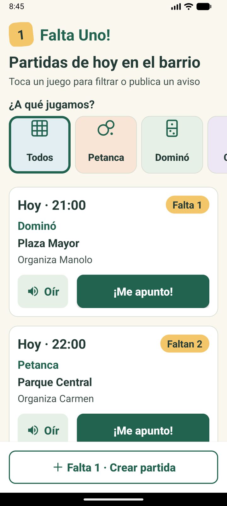
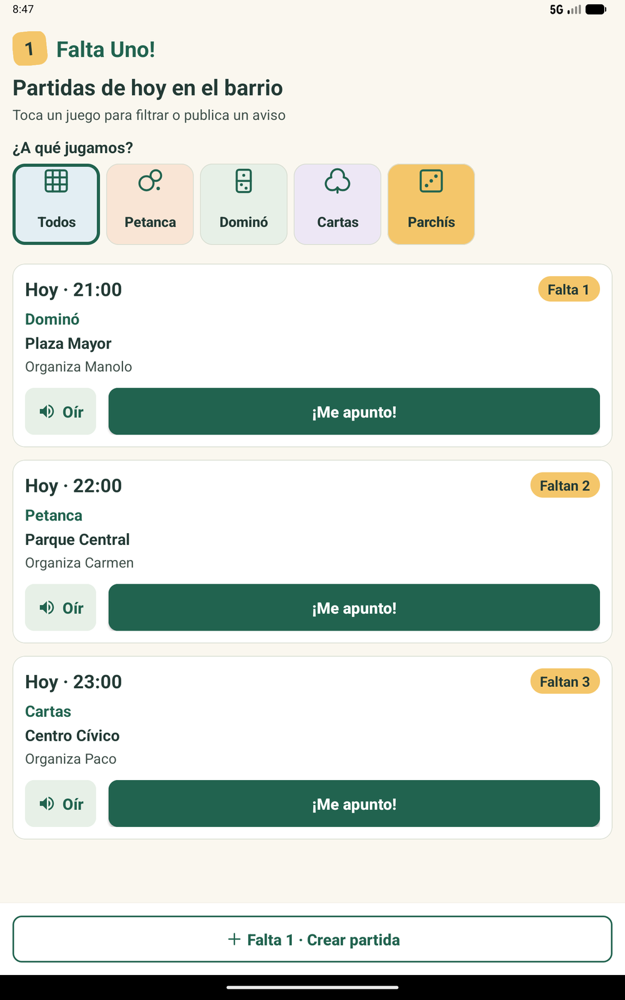
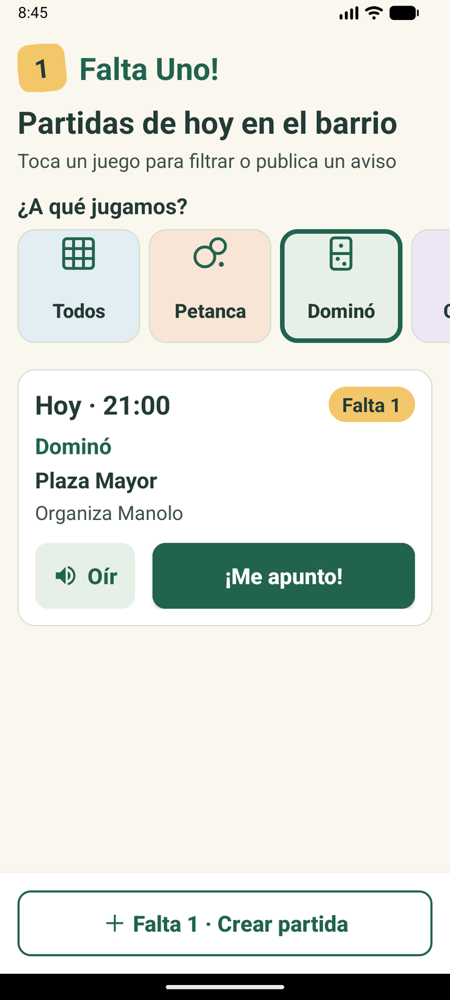
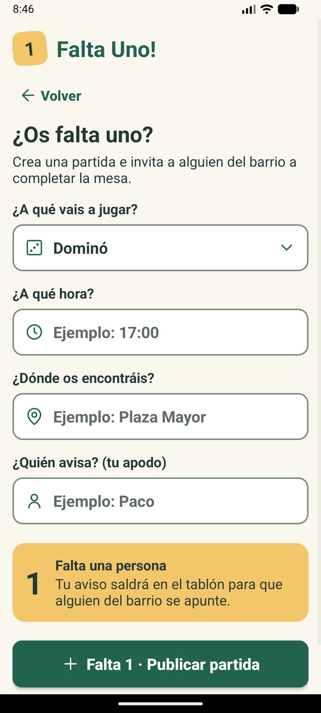
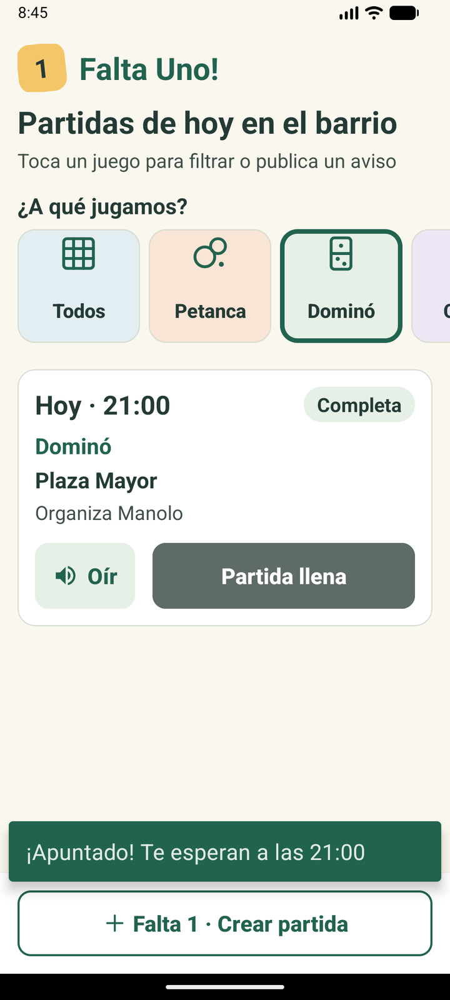
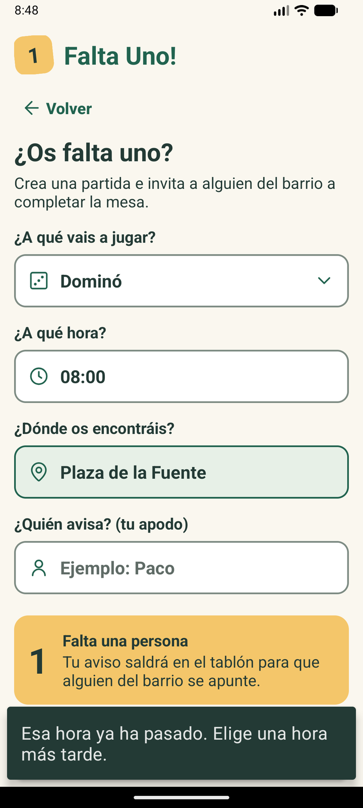

1
Falta Uno!
Una partida cerca.
Un buen rato juntos.
Adrián Iturbe
Pol Cañizares
Oriol Torres
Enrique Flores
2.º DAM · Monlau · MVP Android

Buenos días. Somos Adrián, Pol, Oriol y Enrique, y os presentamos Falta Uno!, una app Android para que las personas mayores del barrio encuentren o convoquen partidas de dominó, cartas, petanca o parchís.
En siete minutos os contamos el problema, cómo lo hemos resuelto, cómo hemos trabajado y lo que nos queda por hacer.
1
Falta Uno!
Quieren jugar.
No saben si habrá alguien.
Mayores solos en casa
¿Habrá gente en el parque hoy?
Apps con registros, chats y letra pequeña
En el barrio hay muchas personas mayores que viven solas y que saldrían a jugar una partida, pero no saben si habrá alguien esperándoles.
Y las apps que existen piden registrarse, tienen chats y letra pequeña: no están pensadas para ellos.
Nuestro objetivo es combatir la soledad con algo muy sencillo: un tablón de partidas del barrio.
1
Falta Uno!
Un tablón de partidas
del barrio
1Ver las partidas de hoy
2Apuntarse con un toque
3¿Os falta uno? Publicar aviso
Sin registroSin chatsMóvil y tablet

Falta Uno! es un tablón: al abrir la app ves las partidas de hoy, con la hora, el sitio y cuántos faltan.
Para apuntarte basta un toque en "¡Me apunto!", y si a tu mesa le falta gente, publicas un aviso en segundos.
No hay registro, ni contraseñas, ni chats: solo un apodo. Funciona en móvil y en tablet.
Del Figma a la app
Diseño




Antes de programar diseñamos el prototipo en Figma. Después llevamos a la app los mismos colores (medidos píxel a píxel),
el logo del "1" amarillo, las casillas de colores de cada juego, las tarjetas "Hoy · hora" con la etiqueta amarilla y el formulario "¿Os falta uno?".
Hicimos dos cambios a propósito: textos secundarios más oscuros para que se lean mejor, y las casillas en una fila para que quepa la lista de partidas en el móvil.
Cómo trabajamos
SDD + GitPrimero la especificación (SDD)
spec.mdQué hace · 6 requisitos EARS▼
plan.mdCómo · Java + XML + SharedPreferences▼
tasks.mdTareas · T-1 … T-9 con "hecho cuando…"▼
Código Android · revisado contra el spec
Una rama por persona → PR → main
Sin force pushMerge normalCompila antes de fusionar
Trabajamos con Spec Driven Development: primero escribimos qué tiene que hacer la app en spec.md, con seis requisitos en formato EARS;
luego el plan técnico y la lista de tareas, cada una con su "hecho cuando…". El código se revisó siempre contra esos documentos.
En Git, cada uno trabajó en su rama y la integró en main con una Pull Request, sin force push y comprobando que compilaba antes de fusionar.
Al final hicimos una rama de revisión para unir todo y pulir el diseño.
Lo que ya funciona
FuncionalidadesFiltrar
Una casilla por juego

Apuntarse
Un toque · resta una plaza
«Partida de Dominó, a las 21:00, en Plaza Mayor. Queda 1 plaza libre.»
Oír
Voz de Android en español

Crear aviso
Valida la hora antes de publicar
Esto es lo que ya funciona. Filtrar: tocas la casilla de un juego y solo ves esas partidas.
Apuntarse: un toque, resta una plaza y, si se llena, el botón pasa a "Partida llena" y nadie más puede entrar.
Oír: el altavoz lee en voz alta el juego, la hora, el lugar y las plazas, con la voz de Android en español.
Y crear aviso: el formulario comprueba que la hora tenga formato y que no haya pasado; si algo falta, avisa con un mensaje grande.
(Si hay tiempo, Oriol puede comentar el formulario, que es su parte.)
Pensada para mayores
Accesibilidad + arquitectura18 spletra mínima
60 dpbotones mínimo
7:1contraste de los textos principales
1 toquepara apuntarse, con voz
Arquitectura sencilla (Java + XML)
Toda la app sigue las normas de nuestra constitución: letra de 18 sp como mínimo, botones de 60 dp, contraste alto
(los textos principales tienen 7 a 1 o más y ningún texto baja de 5,5 a 1; oscurecimos el gris del Figma para conseguirlo) y la voz para quien no ve bien.
La arquitectura es sencilla: dos pantallas, el adaptador de las tarjetas, el gestor de voz y un gestor de datos único
que guarda las partidas en el móvil en formato JSON. Cada caja lleva el nombre de quién la hizo.
Lo que nos queda
Siguientes pasos- Los datos solo están en este móvil
- Partidas solo para hoy
- Tablet en horizontal sin adaptar
- Probado en emulador, aún no con mayores
Limitaciones
- Servidor para compartir partidas
- Borrarse de una partida
- Iconos de juego en cada tarjeta
- Probarlo con abuelos del barrio
Siguientes pasos
1
Falta Uno!
¡Gracias!
github.com/urion-sertor/faltauno-
Somos sinceros con lo que falta: es un MVP sin servidor, así que las partidas solo viven en el móvil donde se crean, solo hay partidas para hoy,
la tablet en horizontal todavía no está adaptada y la hemos probado en emulador pero aún no con personas mayores, que es la tarea T-9.
Los siguientes pasos serían un servidor para compartir las partidas entre vecinos, poder borrarse, iconos en las tarjetas y la prueba real con abuelos.
Tenéis el código, el SDD y esta presentación en GitHub con el QR. ¡Muchas gracias! ¿Preguntas?